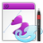
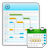

Calligra
Dieser Artikel wurde für die folgenden Ubuntu-Versionen getestet:
Ubuntu 16.04 Xenial Xerus
Ubuntu 14.04 Trusty Tahr
Zum Verständnis dieses Artikels sind folgende Seiten hilfreich:
Calligra  ist nach der Abspaltung von KOffice das Büro-Paket der KDE-Community, wird aber bei einer Standardinstallation von Kubuntu nicht mitinstalliert, da hier Apache OpenOffice bzw. LibreOffice zum Einsatz kommt. Calligra steht, wie auch KDE selbst, unter der GPL. Zu Calligra bzw. KOffice gehören viele Einzelanwendungen, die sich auch in anderen Desktopumgebungen nutzen lassen. Damit stellen beide Projekte die umfangreichsten Bürosuites für (K)ubuntu dar.
ist nach der Abspaltung von KOffice das Büro-Paket der KDE-Community, wird aber bei einer Standardinstallation von Kubuntu nicht mitinstalliert, da hier Apache OpenOffice bzw. LibreOffice zum Einsatz kommt. Calligra steht, wie auch KDE selbst, unter der GPL. Zu Calligra bzw. KOffice gehören viele Einzelanwendungen, die sich auch in anderen Desktopumgebungen nutzen lassen. Damit stellen beide Projekte die umfangreichsten Bürosuites für (K)ubuntu dar.
KOffice vs. Calligra¶
Die Calligra-Suite ist eine Abspaltung des freien Bürosoftware-Pakets KOffice. Grund für die Abspaltung im Jahr 2010 war ein Streit mit einem KWord-Entwickler. Version 2.3 von KOffice wurde vom Calligra-Team weiter gepflegt, und auf Basis von KOffice 2.4 startete die unabhängige Entwicklung der Calligra-Suite. KOffice wurde eine Weile lang von einem stark reduzierten Entwicklerteam ebenfalls weiterentwickelt, später aber endgültig eingestellt. Im Zuge der Abspaltung wurden Kexi, KPlato und Krita aus KOffice entfernt. KOffice ist lediglich bis Ubuntu 11.10 in den Paketquellen enthalten und wurde ab Ubuntu 12.04 durch Calligra ersetzt. Die Entwicklung von KOffice wurde im September 2012 eingestellt.
Installation¶
Grundsätzlich lassen sich auch nur einzelne Anwendungen von Calligra installieren. Um alle Applikationen in das eigene System zu integrieren, muss das folgende Paket installiert [1] werden:
calligra
 mit apturl
mit apturl
Paketliste zum Kopieren:
sudo apt-get install calligra
sudo aptitude install calligra
Komponenten¶
| Komponentenübersicht | ||
| Textverarbeitung | Words ist ein Textverarbeitungsprogramm. Es können ODF-Dokumente geöffnet und gespeichert werden. MS Word Dokumente (.doc und .docx) können geöffnet jedoch nicht als solche gespeichert werden. | |
| Paket: calligrawords | ||
| Tabellenkalkulation | Neben dem Erstellen von Tabellen können mit Sheets Formeln und Statistiken bearbeitet werden. MS-Excel-Dateien können importiert werden. | |
| Paket: calligrasheets | ||
| Präsentation | Mit Stage können Bildschirmpräsentationen erstellt werden. Präsentationen von MS PowerPoint können geöffnet, aber nicht gespeichert werden. | |
| Paket: calligrastage | ||
| Vektorgrafik | Karbon ist ein Vektorgrafikprogramm. Hiermit kann man aufwendige Grafiken erstellen, die nicht an Bildqualität verlieren, wenn man in sie hineinzoomt oder wenn man die Bilder skaliert. | |
|  | Paket: karbon | |
| Flussdiagramme | Flow ist ein Programm zum Zeichnen von verschiedenen Diagrammen. Beispielsweise können Fluss- und Netzwerkdiagrammen entworfen werden, aber auch Schaltkreise oder Grafiken zur Regelungstechnik, Logik, Pneumatik, Optik und vielen weiteren. | |
| Paket: calligraflow | ||
| Datenbank | Mit Kexi ist ein Pendant zu MS Access. Es können verschiedene Datenbanken verwaltet werden. Derzeit werden SQLite, MySQL und PostgreSQL unterstützt. | |
| Paket: kexi | ||
| Projektverwaltung | Plan ist ein Programm zur Projektplanung und -verwaltung. Es kann auch in Dokumente anderer Calligra-Anwendungen eingebunden werden. Es bietet eine Gantt-Ansicht und die grundlegenden Projektmanagement-Funktionen. | |
|  | Paket: calligraplan | |
| Bildbearbeitung | Krita ist ein Mal- bzw. Zeichenprogramm. Die Anwendung hat das Ziel leichtverständlich und vielseitig zu sein. So werden Pinsel-Vorlagen (sog. "Brushes", "Brush Templates"), Arbeitsflächenrotation, Drucksensivität sowie diverse Dokumentvorlagen, Farbräume und Profile unterstützt. | |
| Paket: krita | ||
| Mind Map | Braindump ist eine Art Mind Map Programm zum Sammeln von Ideen und Notizen. Es können sogenannte "Whiteboards" erstellt werden, auf denen Bilder, Texte, Diagramme oder Zeichnungen platziert werden können. Es besteht (derzeit) keine explizite Möglichkeit zum Öffnen, Speichern oder Exportieren von Daten. Beim Starten und Beenden von Braindump werden alle Whiteboards automatisch geladen bzw. gespeichert. | |
| Paket: braindump | ||
| Author | Author wurde erstmals zusammen mit Calligra 2.6 (Ubuntu 13.04) veröffentlicht. Das Textverarbeitungsprogramm nutzt im Hintergrund die Funktionen von Words, die Benutzeroberfläche ist jedoch speziell an die Bearbeitung und Veröffentlichung von E-Books ausgerichtet. | |
| Paket: calligraauthor | ||
 Übersichtsseite
Übersichtsseite- Erstellt mit Inyoka
-
 2004 – 2017 ubuntuusers.de • Einige Rechte vorbehalten
2004 – 2017 ubuntuusers.de • Einige Rechte vorbehalten
Lizenz • Kontakt • Datenschutz • Impressum • Serverstatus -
Serverhousing gespendet von